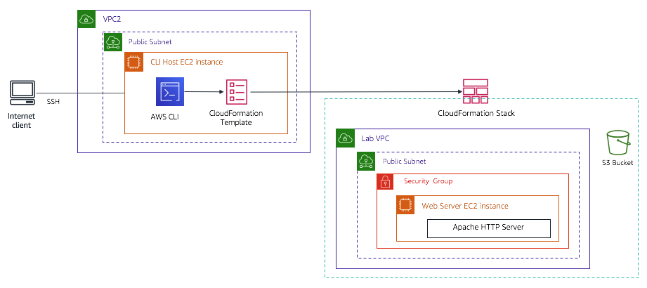

Activity - Troubleshoot CloudFormation
Activity overview
In this activity, you will practice troubleshooting AWS CloudFormation deployments.
In Task 1, you practice querying JavaScript Object Notation (JSON)-formatted data by using JMESPath.
In Task 2, you start using your AWS account. The environment starts by providing you an Amazon Elastic Compute Cloud (Amazon EC2) instance named CLI Host that exists in a virtual private cloud (VPC) named VPC2. You will establish a Secure Shell (SSH) connection to the CLI Host. From the CLI Host, you use the AWS Command Line Interface (AWS CLI) to run AWS CloudFormation commands that will create a stack with resources in the AWS account. Your first attempt to create a stack will fail and will require troubleshooting.
In Task 3, you manually modify (outside of the context of AWS CloudFormation) a resource that was created by the AWS CloudFormation stack. You then use AWS CloudFormation to detect drift.
In Task 4, you attempt to delete the stack. However, issues are encountered. In the Challenge section, you must figure out to how successfully delete the stack, while keeping the Amazon Simple Storage Service (Amazon S3) bucket that was originally created by the stack and that now contains objects.
The architectural diagram below illustrates the setup that is used in tasks 2, 3, and 4 of this activity.

Duration
This lab will require approximately 75 minutes to complete.
Activity objectives
After completing this activity, you will be able to:
- Practice using JMESPath to query JSON-formatted documents.
- Troubleshoot the deployment of an AWS CloudFormation stack by using the AWS CLI.
- Analyze log files on a Linux EC2 instance to determine the cause of a
create-stackfailure. - Troubleshoot a failed
delete-stackaction.
Business case relevance
A new request from the Café leadership team

Sofîa is discussing the AWS deployment that is used by the Café with Olivia. Sofîa mentioned that Martha and Frank would like both her and Nikhil to have the skills to build infrastructure as code (IaC). Olivia suggested that as a first attempt, Sofîa should try working on a proof of concept (POC).
In this activity, you take on the role of Sofîa. See if you can create a deployment of a web server inside a custom VPC that you define, and perform this deployment by using an AWS CloudFormation template. You will also learn how to troubleshoot deployments so that you gain an understanding of how effective this technology can be.
Activity steps
Launching the activity environment
At the top of these instructions, click Start Lab to launch your lab.
A Start Lab panel opens displaying the lab status.
Wait until you see the message "Lab status: ready", then click the X to close the Start Lab panel.
Task 1: Practice querying JSON-formatted data by using JMESPath
In this first task, you will practice using the JMESPath JSON query language to return results from a JSON document.
Open a new browser window and go to jmespath.org/.
Tip: If possible, arrange the browser windows so that you can see these instructions and also see the jmespath.org window at the same time.
On the JMESPath website, in the document window that currently displays the locations JSON document, copy the following JSON document (replacing the locations document):
xxxxxxxxxx{"desserts": [{"name": "Chocolate cake","price": "20.00"},{"name": "Ice cream","price": "15.00"},{"name": "Carrot cake","price": "22.00"}]}Resize the JSON code panel in the browser window so that you can see the entire document, or as much of it as possible.
In the Expression search box above the document, delete all the text. In the search box, enter
desserts.The expression is immediately evaluated.
Important: Do not press ENTER after you enter an expression in the search box. If you press ENTER, the entire page reloads with its original data.
In the Result panel below the document, notice that all the content that is in the desserts part of the document is returned.
Add
[1]to the expression:xxxxxxxxxxdesserts[1]Notice that only the second dessert element is displayed. The
[]notation is used with an index, and it enables you to refer to a specific element of an array. Because JMESPath considers the first position in an array to be 0,1returns the second element.Retrieve only the value of the name attribute for the chocolate cake element. In the search box, enter:
xxxxxxxxxxdesserts[0].nameThe name of the first dessert element, "Chocolate cake", is returned.
Tip: The
.notation allows you to specify the name of an attribute in the document.Retrieve the values of both the name and price attributes of the chocolate cake element. In the search box, enter:
xxxxxxxxxxdesserts[0].[name,price]The name and price of the chocolate cake desert is displayed. The
[]notation can also be used to define a list of attributes to return.Return the values of the name attribute for all three dessert elements, but without the prices.
xxxxxxxxxxdesserts[].nameAn empty array index
[]or one with an asterisk[*]refers to all of the elements in an array.Now use a filter, instead of referring to elements by their position. Return the attributes of the carrot cake element:
xxxxxxxxxxdesserts[?name=='Carrot cake']Notice that you did not need to know the index of the element that you were searching for. The filter expression
[? <expression>]returns the elements in the document that match the expression condition that you specify.Lastly, replace the JSON document with the following document, which describes resources in an AWS CloudFormation stack:
xxxxxxxxxx{"StackResources": [{"LogicalResourceId": "VPC","ResourceType": "AWS::EC2::VPC"},{"LogicalResourceId": "PublicSubnet1","ResourceType": "AWS::EC2::Subnet"},{"LogicalResourceId": "CliHostInstance","ResourceType": "AWS::EC2::Instance"}]}Can you determine the correct JSMESPath expression to retrieve the LogicalResourceId of the EC2 instance resource? Try to figure it out on your own before you use the following solution.
xxxxxxxxxxStackResources[?ResourceType == 'AWS::EC2::Instance'].LogicalResourceIdWhen you complete the other tasks in this activity, you will notice that the instructions often have AWS CLI commands that include
--queryor--filterparameters. These parameters use JMSEPath expressions to filter the output that is returned by an AWS CLI command.You are encouraged to practice using what you learned in this first task—throughout this activity—while you use the AWS CLI.
Task 2: Troubleshooting and working with AWS CloudFormation stacks
Task 2 starts with an EC2 instance named CLI Host, which is already created for you. It runs in the public subnet of a VPC named VPC2.
You will first establish an SSH connection to the CLI Host so that you can work with the AWS CloudFormation service from there.
Task 2.1 for Windows: SSH to CLI Host Instance
These instructions are for Windows users only.
If you are using macOS or Linux, skip to the next section.
Read through the three bullet points in this step before you start to complete the actions, because you will not be able see these instructions when the Details panel is open.
- Click on the Details drop down menu above these instructions you are currently reading, and then click Show. A Credentials window will open.
- Click on the Download PPK button and save the labsuser.ppk file. Typically your browser will save it to the Downloads directory.
- Then exit the Details panel by clicking on the X.
Download needed software.
- You will use PuTTY to SSH to Amazon EC2 instances. If you do not have PuTTY installed on your computer, download it here.
Open putty.exe
Configure PuTTY to not timeout:
- Click Connection
- Set Seconds between keepalives to
30
This allows you to keep the PuTTY session open for a longer period of time.
Configure your PuTTY session:
- Click Session
- Host Name (or IP address): Copy and paste the IPv4 Public IP address for the CLI Host instance. To find it click on the Details drop down menu above these instructions you are currently reading, and then click Show. Copy the CliHostIP value.
- Back in PuTTy, in the Connection list, expand SSH
- Click Auth (don't expand it)
- Click Browse
- Browse to and select the lab#.ppk file that you downloaded
- Click Open to select it
- Click Open
Click Yes, to trust the host and connect to it.
When prompted login as, enter:
ec2-userThis will connect you to the EC2 instance.
Task 2.1 for macOS/Linux: SSH to CLI Host Instance
These instructions are for Mac/Linux users only. If you are a Windows user, skip ahead to the next task.
Read through the three bullet points in this step before you start to complete the actions, because you will not be able see these instructions when the Details panel is open.
- Click on the Details drop down menu above these instructions you are currently reading, and then click Show. A Credentials window will open.
- Click on the Download PEM button and save the labsuser.pem file.
- Then exit the Details panel by clicking on the X.
Open a terminal window, and change directory
cdto the directory where the labsuser.pem file was downloaded.For example, run this command, if it was saved to your Downloads directory:
cd ~/DownloadsChange the permissions on the key to be read only, by running this command:
xxxxxxxxxxchmod 400 labsuser.pemCopy and paste the IPv4 Public IP address for the CLI Host instance. To find it click on the Details drop down menu above these instructions you are currently reading, and then click Show.
Copy the CliHostIP value.
Return to the terminal window and run this command (replace <public-ip> with the actual public IP address you copied):
xxxxxxxxxxssh -i labsuser.pem ec2-user@<public-ip>Type
yeswhen prompted to allow a first connection to this remote SSH server.Because you are using a key pair for authentication, you will not be prompted for a password.
Task 2.2: Configure the AWS CLI
Discover the region in which the CLI Host instance is running:
xxxxxxxxxxcurl http://169.254.169.254/latest/dynamic/instance-identity/document | grep regionYou will use this region information in a moment.
Update the AWS CLI software with the credentials.
xxxxxxxxxxaws configureAt the prompts, enter the following information:
- AWS Access Key ID: Click on the Details drop down menu above these instructions, and then click Show. Copy the AccessKey value and paste it into the terminal window.
- AWS Secret Access Key: Copy and paste the SecretKey value from the same Credentials screen.
- Default region name: Type in the name of the region where your EC2 instances are running, which you just discovered a moment ago. For example,
us-east-1oreu-west-2. - Default output format:
json
Task 2.3: Attempt to create an AWS CloudFormation stack
In this task, you will try to create an AWS CloudFormation stack from a template that is given to you. You will use the AWS CLI to do this task.
Run the following command to first observe the AWS CloudFormation template that you will use:
xxxxxxxxxxless template1.yamlScroll through the template contents and observe the contents:
Tip: Press RETURN (or ENTER) to scroll though the contents of the file.
The Parameters section has a few items, including the AmazonLinuxAMIID and KeyName parameters that are referenced in the Resources section. The Resources section is lower in the template, and it is where you can create an EC2 instance.
The Resources section contains most of the lines in this template. It creates the following resources:
- VPC with supporting resources, including a public subnet.
- EC2 instance named Web Server.
- WaitCondition and WaitHandle resources that wait for the userdata script (which is specified in the EC2 instance details) to complete.
- S3 bucket.
- Security Group resource named WebServerSG.
The Outputs section writes out the name of the S3 bucket and the public IP address of the EC2 instance that are created.
When you are done observing the contents of the template, exit the less Linux utility by entering
q.Run the following command to create a stack:
xxxxxxxxxxaws cloudformation create-stack \--stack-name myStack \--template-body file://template1.yaml \--capabilities CAPABILITY_NAMED_IAM \--parameters ParameterKey=KeyName,ParameterValue=vockeyCheck the status of each resource that is created by this stack:
xxxxxxxxxxwatch -n 5 -d \aws cloudformation describe-stack-resources \--stack-name myStack \--query 'StackResources[*].[ResourceType,ResourceStatus]' \--output tableNote: In the previous command, the watch Linux utility is used to invoke the
describe-stack-resourcescommand. It runs the same command every 5 seconds, and it briefly highlights changes as they occur. The command above also uses the--output tableparameter to make reading the results easier.Observe the progress of resource creation. This step will take approximately 3–5 minutes.
You will not see all resources display immediately because some resources have dependencies on other resources, which must be created first.
The WaitCondition resource is the last resource that will be run. It has a 60 second timeout from when it was invoked, which does not occur until after some other resources are created.
Important: Notice that after almost all resources are created, they start being deleted.
Something is definitely wrong. You must do some troubleshooting.
To exit the watch Linux utility, press CTRL+C on your keyboard and go to the next step.
To see the stack status and other details, run the
describe-stackscommand:xxxxxxxxxxwatch -n 5 -d \aws cloudformation describe-stacks \--stack-name myStack \--output tableDepending on when you ran the previous command, the output of
describe-stackswill either show a status of CREATE_FAILED or it will enter a status of ROLLBACK_IN_PROGRESS followed by a status of ROLLBACK_COMPLETE.This is expected behavior.
Exit the watch Linux utility by pressing CTRL+C.
Analyze the issue by running the
describe-stack-eventscommand with a query that returns only the CREATE_FAILED events:xxxxxxxxxxaws cloudformation describe-stack-events \--stack-name myStack \--query "StackEvents[?ResourceStatus == 'CREATE_FAILED']"Read the output of the command.
If you followed the steps above, the output of this command—in the ResourceStatusReason element—should show that the WaitCondition timed out.
You might recall—from looking at the AWS CloudFormation template—that the wait condition waits for a signal at the end of the userdata section of the EC2 instance resource. If you would like to confirm this situation, review the contents of the template again.
This situation could indicate that there is an issue in the userdata section of the EC2 instance resource that the template attempted to create.
Consider accessing the userdata logs for the EC2 instance.
The next logical step is to look at the logs that capture any errors that were thrown when the userdata script ran. Unfortunately, AWS CloudFormation deleted the EC2 instance that contained the log.
By default, AWS CloudFormation deletes all resources if any of the resources that are defined in the template cannot be successfully created. Because the wait condition resource failed, the entire stack failed and all changes were rolled back.
Run the
describe-stackscommand one more time.xxxxxxxxxxaws cloudformation describe-stacks \--stack-name myStack \--output tableThe StackStatus element indicates that the status of the stack is now ROLLBACK_COMPLETE.
This status confirms that the EC2 instance and the other resources that were created by the stack were deleted.
Delete the stack with the status ROLLBACK_COMPLETE.
Though the stack failed, and the stack resources were all deleted, the stack object itself was not deleted.
Use the following command to delete the stack:
xxxxxxxxxxaws cloudformation delete-stack --stack-name myStackThe stack will be deleted quickly because it does not contain resources that must be rolled back.
Task 2.4: Avoid rollback on an AWS CloudFormation stack
Now, run the
create-stackcommand again. Give the stack the same name, but this time, specify that there should be no rollback on failure:xxxxxxxxxxaws cloudformation create-stack \--stack-name myStack \--template-body file://template1.yaml \--capabilities CAPABILITY_NAMED_IAM \--on-failure DO_NOTHING \--parameters ParameterKey=KeyName,ParameterValue=vockeyIn the command, notice the parameter
--on-failure DO_NOTHING. This parameter will ensure that a rollback will not occur this time. Without a rollback, you will have time to introspect the EC2 instance logs.Run the
describe-stack-resourcescommand again.xxxxxxxxxxwatch -n 5 -d \aws cloudformation describe-stack-resources \--stack-name myStack \--query 'StackResources[*].[ResourceType,ResourceStatus]' \--output tableWait until there are no more stack resources with a status of CREATE_IN_PROGRESS.
Notice that after the WaitCondition attains the status of CREATE_FAILED, the other resources keep their CREATE_COMPLETE status.
Tip: To exit the watch utility, press CTRL+C.
Run the
describe-stackscommand.xxxxxxxxxxaws cloudformation describe-stacks \--stack-name myStack \--output tableThe output should indicate that the status of the stack is now CREATE_FAILED.
Significantly, however, AWS CloudFormation did not roll back the stack this time.
Analyze the latest details of the CREATE_FAILED event and verify that it is the same issue as before.
xxxxxxxxxxaws cloudformation describe-stack-events \--stack-name myStack \--query "StackEvents[?ResourceStatus == 'CREATE_FAILED']"The output of the above command should again confirm that the timeout of the WaitCondition is the issue.
After the stack fails, use SSH to connect to the Web Server EC2 instance that was created by the stack. To do this:
In the terminal window where you are connected to the CLI Host, run a
describe-instancescommand to get the public IP address:xxxxxxxxxxaws ec2 describe-instances \--filters "Name=tag:Name,Values='Web Server'" \--query 'Reservations[].Instances[].[State.Name,PublicIpAddress]'Copy the IP address that was returned by the previous command.
Leave this CLI Host terminal window active. You will return to it later.
Open a new terminal window or tab on your computer.
Tip: For details on how to connect to the instance, refer back to Task 2.1 for your operating system. This time, make sure that you connect to the new IP address. After you are connected, the terminal prompt should contain the hostname of web-server.
Connect to the Web Server instance.
Analyze the cloud-init-output.log file.
In the web-server SSH terminal window, run the following command to view the last 50 lines of the cloud-init log output:
xxxxxxxxxxtail -50 /var/log/cloud-init-output.logNotice the line in the log (approximately 5–10 lines from the bottom) that states: No package http available.
Also, notice the message: util.py[WARNING]: Failed running /var/lib/cloud/instance/scripts/part-001. You will look at the util.py file next.
Analyze the part-001 script.
Run the following command to view the part-001 script:
xxxxxxxxxxsudo cat /var/lib/cloud/instance/scripts/part-001Notice that the part-001 script contains all the contents of userdata that were specified in the AWS CloudFormation template.
In particular, notice the first line, which starts with the #! characters. This line includes the
-eparameter. This parameter signals that if any command in the script fails, the whole script should immediately stop running with a non-zero status.In summary, because no package named http could be found, the userdata script failed. Therefore, the wait condition never received the success signal, and after 2 minutes, the wait condition timed out. This reason is why the stack failed.
In the terminal window where you are connected to the web server, enter
exitto disconnect from the Web Server instance.Close the terminal window.
Task 2.5: Fix the issue and successfully create the AWS CloudFormation stack
Back in the terminal window where you are connected to the CLI Host instance, update the AWS CloudFormation template:
xxxxxxxxxxvim template1.yaml- Use the DOWN arrow key to scroll down (or enter
:128and press ENTER) to scroll to the part of the template that must be updated. - On line 128, in the UserData section of the EC2 resource, change "http" to
"httpd"(which is the actual name of the Apache web server). - Tip: Use the UP and DOWN arrow keys to position your cursor. Enter
ato enter edit mode in the vi editor, and then make the change. Press ESC to exit edit mode. Finally, to write the change to disk and quit the vi editor, enter:wqand press ENTER.
- Use the DOWN arrow key to scroll down (or enter
Confirm that the file was updated by running this command:
xxxxxxxxxxcat template1.yaml | grep httpdThe output of the command should return three lines of the file.
The first line should show the
yum install -y httpdline that you modified.Important: If the yum line does not appear, your changes might not have been saved. If you do not see the yum line, repeat the previous step.
Delete the failed stack:
xxxxxxxxxxaws cloudformation delete-stack --stack-name myStackIt might take a minute or two to delete the stack because many resources must be deleted.
Run the
describe-stackscommand.xxxxxxxxxxwatch -n 5 -d \aws cloudformation describe-stacks \--stack-name myStack \--output tableIf you ran the previous command not long after running the
delete-stackcommand, a table should display. The table should show that the StackStatus is DELETE_IN_PROGRESS.However, when the table disappears and the output indicates that the stack does not exist, exit the Linux watch utility by pressing CTRL+C.
Now that you resolved the issue in the template, run the
create-stackcommand again:xxxxxxxxxxaws cloudformation create-stack \--stack-name myStack \--template-body file://template1.yaml \--capabilities CAPABILITY_NAMED_IAM \--on-failure DO_NOTHING \--parameters ParameterKey=KeyName,ParameterValue=vockeyRun the
describe-stack-resourcescommand again and wait until all resources are created:xxxxxxxxxxwatch -n 5 -d \aws cloudformation describe-stack-resources \--stack-name myStack \--query 'StackResources[*].[ResourceType,ResourceStatus]' \--output tableWait until there are no more stack resources with a status of CREATE_IN_PROGRESS.
Tip: To exit the watch utility, press CTRL+C.
Run the
describe-stackscommand.xxxxxxxxxxaws cloudformation describe-stacks \--stack-name myStack \--output tableThis time, your stack should be created successfully (without errors), and it should have a StackStatus of CREATE_COMPLETE.
Also notice that the Outputs section includes the PublicIP address of the web server and the name of the S3 bucket that was created.
Test the web server.
- Copy the public IP address from the output of the previous command.
- To load the server webpage, open a browser tab and enter the IP address.
- A Hello from your web server! message should display.
Congratulations! You figured out why the stack was failing. You successfully discovered the root cause of the problem by looking at log files on the EC2 instance.
You completed the necessary troubleshooting and then updated your AWS CloudFormation template so that it successfully created a set of resources.
You used the WaitCondition in combination with the -e parameter that was specified in the line that starts with the #! characters at the top of the userdata section in your template. By using the WaitCondition with the -e parameter, you ensured that every command in the userdata script ran without error.
Task 3: Make manual modifications and detect drift
In this task, you will intentionally modify a resource that was created by AWS CloudFormation, but you will modify the resource manually in the AWS Management Console.
When you must modify resources that are created by AWS CloudFormation, it is a best practice to update the AWS CloudFormation template and then run the update-stack command. However, it is a common situation that other AWS account users might not know this best practice. They also might forget that it is important to follow this best practice. This task will give you hands-on practice noticing when these situations have occurred.
Task 3.1: Make manual modifications to the security groups
At the top of these instructions, click AWS
This will open the AWS Management Console in a new browser tab. The system will automatically log you in.
Tip: If a new browser tab does not open, there will typically be a banner or icon at the top of your browser indicating that your browser is preventing the site from opening pop-up windows. Click on the banner or icon and choose "Allow pop ups."
Arrange the AWS Management Console tab so that it displays along side these instructions. Ideally, you will be able to see both browser tabs at the same time, to make it easier to follow the lab steps.
From the Services menu, choose EC2.
Click Instances and then select Web Server.
Click the Security tab, followed by the WebServerSG security group.
Click the Inbound rules tab and then click on Edit inbound rules.
Modify the existing SSH inbound rule.
To modify the rule, in the Source column of the row that applies to port 22, click Custom and select My IP.
Click Save rules.
Task 3.2: Add an object to the S3 bucket.
From the terminal that is connected to the CLI Host, query the bucket name, assign it to a variable named bucketName, and echo result to the terminal by running the following command:
xxxxxxxxxxbucketName=$(\aws cloudformation describe-stacks \--stack-name myStack \--query "Stacks[*].Outputs[?OutputKey \== 'BucketName'].[OutputValue]" \--output text)echo "bucketName = "$bucketNameCreate an empty file.
xxxxxxxxxxtouch myfileCopy the file to the bucket by using the following command, which uses the bucketName variable that you defined:
xxxxxxxxxxaws s3 cp myfile s3://$bucketName/Verify that the file is in the bucket:
xxxxxxxxxxaws s3 ls $bucketName/
Task 3.3: Detect drift
To start drift detection on your stack, run the following command:
xxxxxxxxxxaws cloudformation detect-stack-drift --stack-name myStackThe command should return a StackDriftDetectionId.
Monitor the status of the drift detection by running the following command (replace <driftId> with the actual value of StackDriftDetectionId):
xxxxxxxxxxaws cloudformation describe-stack-drift-detection-status \--stack-drift-detection-id driftIdNotice that the output shows "StackDriftStatus": "DRIFTED"
Finally, describe the resources that drifted by running the following
describe-stack-resource-driftscommand:xxxxxxxxxxaws cloudformation describe-stack-resource-drifts \--stack-name myStackThe output from the command is extensive. Try a different approach.
Run a
describe-stack-resourcescommand with a query parameter that will return only the resource type, resource status, and drift status.The following command outputs the results as a table:
xxxxxxxxxxaws cloudformation describe-stack-resources \--stack-name myStack \--query 'StackResources[*].[ResourceType,ResourceStatus,DriftInformation.StackResourceDriftStatus]' \--output tableThis output is easier to read because of the query parameter, which is written in JMESPath.
Notice that not all resources are checked for drift. However, the resources that are checked for drift show a status.
On this stack, all checked resources have a status of IN_SYNC, except for the security group that you manually modified, which has a status of MODIFIED.
Also notice that though you placed an object in the S3 bucket, the bucket still shows a status of IN_SYNC. If you had modified some property of the bucket, then the bucket would show a status of MODIFIED. However, only adding files to a bucket does not register as drift in AWS CloudFormation.
Retrieve the specific details of the drift for the resource that has a StackResourceDriftStatus of MODIFIED:
xxxxxxxxxxaws cloudformation describe-stack-resource-drifts \--stack-name myStack \--stack-resource-drift-status-filters MODIFIEDNotice the PropertyDifferences section of the output. It should show that port 22 is now open only to your IP address, instead of the 0.0.0.0/0 Classless Inter-Domain Routing (CIDR) block that is defined in the AWS CloudFormation template.
Try updating the stack:
xxxxxxxxxxaws cloudformation update-stack \--stack-name myStack \--template-body file://template1.yaml \--parameters ParameterKey=KeyName,ParameterValue=vockeyThe output should indicate that an error occurred. This is expected.
The
update-stackcommand will not automatically resolve drift, though drift has occurred. You must manually resolve these issues to eliminate the drift.
Task 4: Attempt to delete the stack
There might be occasions when you want to completely delete a stack, such as when you finish running tests in a test environment that you no longer need. Or perhaps you want to save on costs if you don't need to use the environment resources for a while. In such situations, you know that if you need these resources again, you can re-create them by using your proven template to create a new stack.
In this last task, you will try to delete the stack. The attempt will fail. You will then be given a challenge to resolve the issue.
Try deleting the stack by running the following command:
xxxxxxxxxxaws cloudformation delete-stack --stack-name myStackObserve the results by running the
describe-stack-resourcescommand:xxxxxxxxxxwatch -n 5 -d \aws cloudformation describe-stack-resources \--stack-name myStack \--query 'StackResources[*].[ResourceType,ResourceStatus]' \--output tableObserve how the status of each resource changes.
Notice that most of the resources are successfully deleted. However, there is one resource that fails to delete. It is the S3 bucket.
Once all resources have a status if either DELETE_COMPLETE or DELETE_FAILED, use the
Ctrl-Ckeyboard combination to exit the watch command.Run the describe-stacks command to see the stack status:
xxxxxxxxxxaws cloudformation describe-stacks \--stack-name myStack \--output tableNotice that the "StackStatus" shows "DELETE_FAILED"
Also notice the "StackStatusReason": "The following resource(s) failed to delete: [MyBucket]. "
CloudFormation will not delete a bucket that has objects in it. This is to help guard against accidental data loss.
Challenge: Keep the file in the S3 bucket, but Still Delete the Stack
One approach to the issue you face would be to manually delete or move the file object that is in the S3 bucket and then run the delete-stack command again. However, that approach may not be appropriate if people in the organization have already starting storing a large number of files in the bucket and other systems now depend on the bucket name and location not changing.
Your challenge is to:
- Figure out how to keep the bucket and keep the file in it, but still successfully delete the stack so that the status of the stack becomes DELETE_COMPLETE.
- Use the AWS CLI to solve the problem (avoid using the AWS Management Console)
Tips:
- TIP #1: Make use of the AWS CLI Command Reference. Do any options exist to keep resources created by the stack, when running the
delete-stackcommand? - TIP #2: What aws cloudformation command would provide you with resource logical IDs? Can you determine the logical ID by which CloudFormation knows the S3 bucket it created?
OPTIONAL BONUS CHALLENGE: can you compose a JMESpath expression and use it in a --query parameter, so that the AWS CLI command returns only the LogicalResourceId? Recall what you practiced in Task 1. Suggestion: surround the query part of the command with double quotes (not single quotes).
- TIP #3: Oftentimes the solution to a challenge requires you to use the output from one command as input to another command, to achieve success.
If you successfully manage to delete the CloudFormation stack using the AWS CLI, without removing the file from the S3 bucket or modifying the S3 bucket in any way, then you have succeeded.
Congratulations, you successfully did some troubleshooting and resolved the failed delete-stack command that left a stack in an undesirable state.
Update from Café
When Sofîa went into work the next morning at the Café, she was excited to tell Nikhil and the others about the proof of concept work she had done the night before, using CloudFormation.
She explained how this "Infrastructure as Code" approach to creating cloud deployments was causing her to completely rethink the cafe's current approach to how they manage the AWS resources that support the cafe website and other business applications.
Nikhil was very interested in what she was describing. They starting discussing how they could use this technology to reliably create matching but separate development and production environments, and how useful that would be for new feature development. They also saw the value provided by powerful features such as drift detection and the ability to tear down and then rebuild complex cloud infrastructures consisting of resources from multiple AWS services.
Activity Complete
Congratulations! You have completed the activity.
Click End Lab at the top of this page and then click Yes to confirm that you want to end the activity.
A panel will appear, indicating that "DELETE has been initiated... You may close this message box now."
Click the X in the top right corner to close the panel.
Additional Resources
For more information about AWS Training and Certification, see https://aws.amazon.com/training/. Your feedback is welcome and appreciated. If you would like to share any suggestions or corrections, please provide the details in our AWS Training and Certification Contact Form. © 2022 Amazon Web Services, Inc. and its affiliates. All rights reserved. This work may not be reproduced or redistributed, in whole or in part, without prior written permission from Amazon Web Services, Inc. Commercial copying, lending, or selling is prohibited.